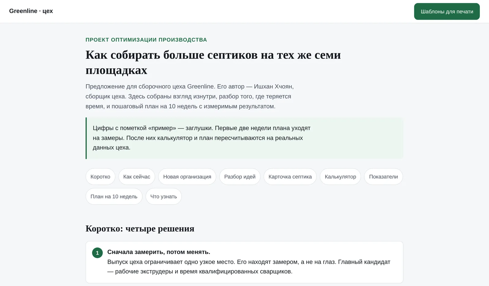

Operations · web tool
Production planner for a septic-tank workshop
I worked on the floor of a septic-tank workshop in Yerevan as an assembler, saw where time was lost, and built a planning tool for the team with Claude Code.
HypothesisThe workshop loses time waiting — for machines, parts and decisions — not on assembly itself.
Built withClaude Code, HTML/CSS/JavaScript, git; works on phones.
InterfaceRussian, for the local team.
What's inside
- Capacity calculator: how many tanks the workshop can build per week from stage times and the number of people and machines.
- Process plan: how a tank moves through 8 stages, who checks what, and where it waits.
- Printable templates: a stage card that travels with each tank, an equipment schedule with a queue, a machine log and a skill matrix.
- A 10-week rollout plan with measurements first, then changes, and clear indicators.
How it changed after feedback
The first version didn't match reality in the details. I talked to the assemblers and rebuilt those parts the next day: batch sizes for cut parts, how large walls are really cut, half-hour slots on the shared extruder, and one shared board instead of several.

Numbers marked "example" are placeholders until the first two weeks of measurements.